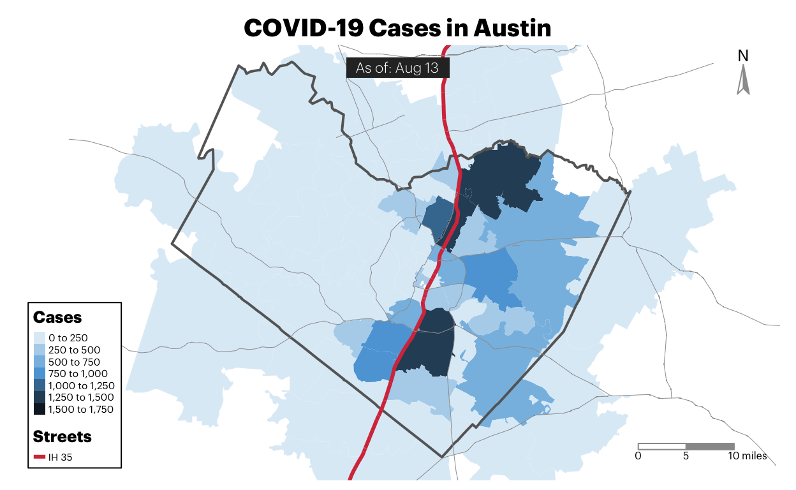
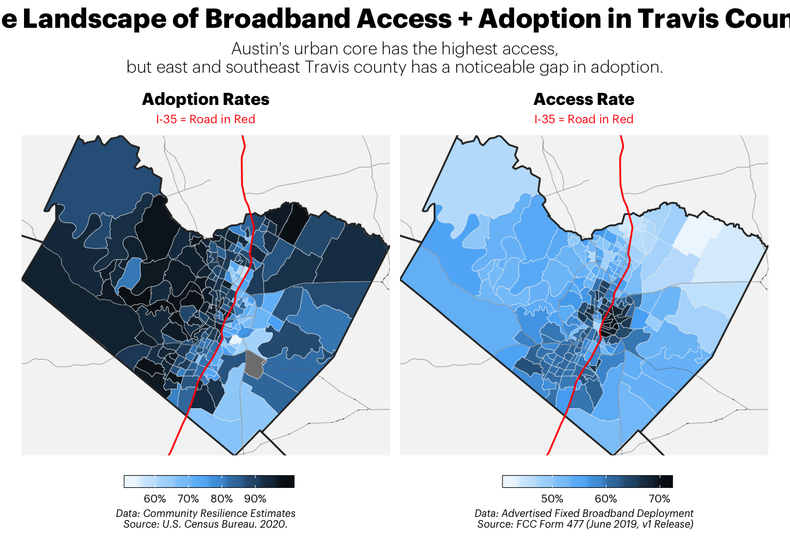
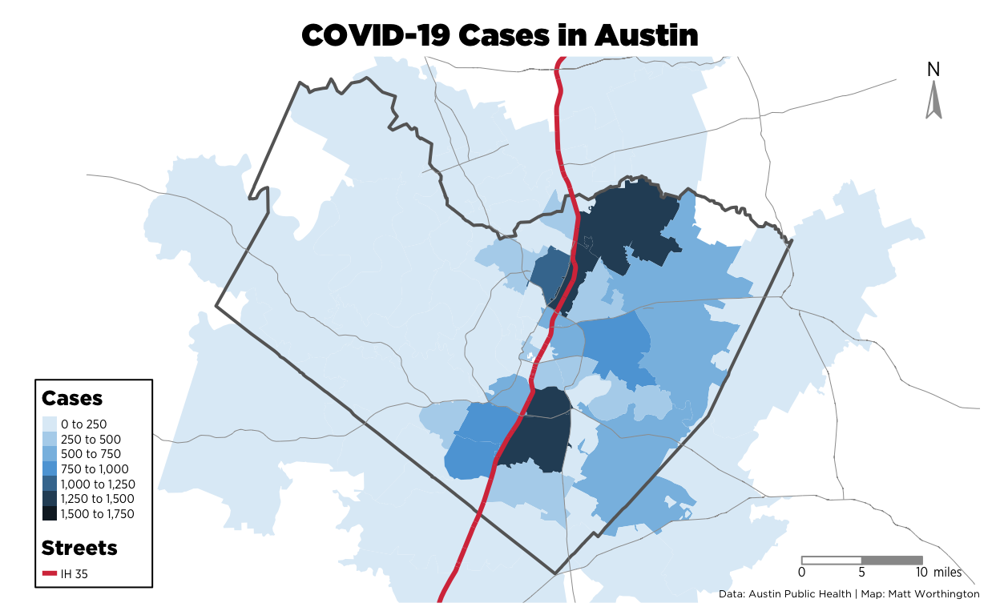
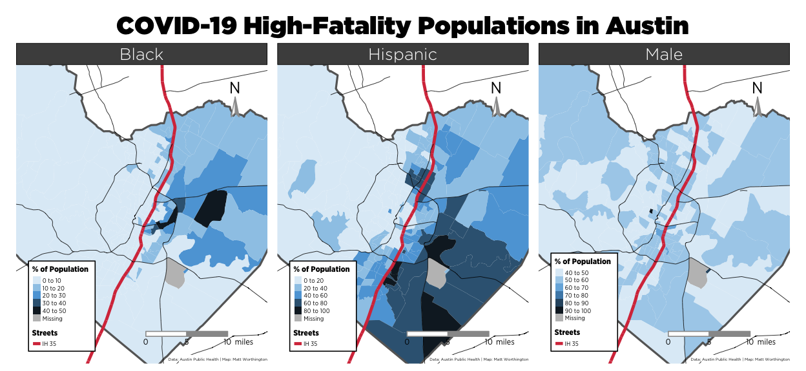
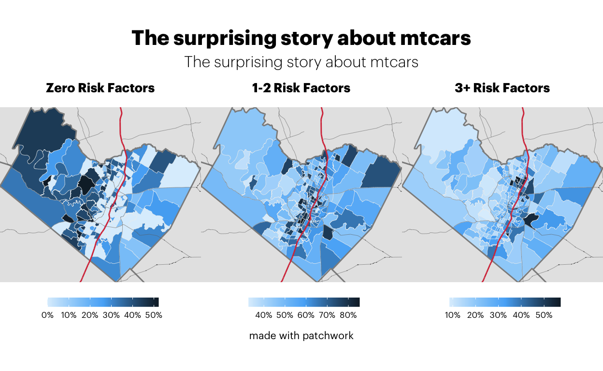

Note to readers: this is a test post! Austin Public Heath has been profiled numerous times throughout the pandemic as being relentless in their efforts to get good data, despite multiple challenges and barriers. In this post, I take a look at local COVID data for Austin that has been collected by Austin Public Health.
Approaching the six-month mark of COVID-19 in Texas, one of the more common topics of discussion I hear is what the effects of coronavirus on our communities reveals about the world that existed before. And where we knew little about COVID-19 back in March, since that time a lot has been documented about what increases the risk of not only becoming severely ill, but also what increases the risk of being exposed to COVID-19 before you even get sick—such as having a job that requires you to be physically present for work (as opposed to working remotely from home) or not having access to a reliable internet connection.
TLDR | Can You Do This Analysis at the Statewide Level?
Yes and no. I originally wanted to look at the statewide data that could answer these questions, but parts of the state’s existing COVID data cannot be aggregated at anything beyond the statewide level for reasons outside of their control.
For example, county-level test positivity is one of those things that has been difficult because COVID-19 lab testing has largely been decentralized, with over 97% of tests being conducted in commercial labs. Consequently, this means the state has to then coordinate data from over 4 million tests conducted outside of state testing labs.
| Number of People Tested for SARS-CoV-2 in Texas, By Lab Type | ||
|---|---|---|
| Source: Texas Department of State Health Services | As of August 10th at 3:00PM CST1 | ||
| Location | Tests Processed | |
| Total People Tested in Texas by Public Health Lab | 121.78K | |
| No. Tests by Commercial labs* | 4.43M | |
| Total Tests | — | 4,549,474 |
| *Unable to deduplicate figures for Commercial labs. | ||
|
1
Data: From the 'Accessible Dashboard Data' File, under the 'Tests' tab.
|
||
And given that these commercial labs aren’t actually part of a state agency, this means they have to learn new reporting rhythms and do work that, perhaps, they didn’t plan for or know they needed to do–such as keep all of the positives and negatives for each county, record those in a database by the county of origin, deduplicate them by the person who got the test, and then share all of that information back to the state in a manner that is uniform with all the other private labs in the state.
That said, not being able to compare how much a county is testing with how much they’re testing positive weakens a potential analysis and limits how much you can explore the dynamics between risk factors and things like test positivity.
Another example of this information is demographic data about cases and fatalities. That information also doesn’t exist broken down by county–sometimes due to HIPAA requirements.
So if you wanted to analyze geographic COVID-19 trends between counties across multiple pieces of data such as demographic, known risk-factors, and testing trends, you’d have a hard time accomplishing that because it currently doesn’t exist.
For that reason, I’ve chosen to just focus on using city-level data given that cities have broader and more granular access to information about their communities.
I wanted to explore some of these things–to see who is not only getting COVID, but also where folks are most at risk of being exposed to COVID and where they’re most at risk of developing a severe illness because they are infected with COVID. Here’s the problem, though: the trouble of getting good coronavirus data is difficult. It means how we analyze this question is somewhat pre-defined. For the purposes of this blog post, I’m just going to focus on looking at the city-wide data in Austin—where I live—because I know all the data exists with regards to the questions being asked.
This website from the CDC’s documents known factors that would make someone “at increased risk” of developing a severe illness from COVID-19. Of the eight included in their list, four detailed data available for Austin through the CDC’s 500 Cities Project: Local data for better health.
In addition to this list, there are demographic data we can use to assess which groups are dying most often from COVID-19 in Austin. Given that Austin is in Texas, we can use statewide data collected from death certificates to get a broader understanding of who is dying most often from COVID-19. However, we’ll also need to compare those numbers with statewide demographic data from the Census Bureau to assess which groups are experiencing death at unusually high rates. The only exception to this age data, given that it’s widely known that COVID-19 is particularly fatal for the population aged 65 and older, which in Texas accounts for 71% percent of all deaths. It’s worth noting if you go back to ages 50 and older account, the share of deaths jumps up to 92% for statewide deaths. For now, however, now we’ll stick to the population aged 65 and older. We’ll include that in the list, but to get other factors, we’ll have to compare deaths to the population:

In total right now, we now have 7 things things that either put you at risk for developing a severe illness (Cancer, Chronic kidney disease, COPD, and Type 2 Diabetes) or classify as groups within Texas that disproportionately fall victim to COVID-19 (. If we consider things that may increase your risk of exposure, we’ll be able to get a look at Austin and determine where folks live who higher risk of exposure, a higher risk of developing a severe illness from COVID-19, or are in a group that is disproportionately dying from COVID-19.
For determining who is at risk of exposure, we can look at actions that decrease exposure–such as staying home more than usual or working from home–but it’s probably better to consider what things enable those actions. For that, we look at having a fast and reliable internet connection at home, which has been highlighted as a major factor in navigating COVID-191 and something that can decrease the risk of exposure23 to COVID-19. If you do have a good internet connection, you can order groceries online, work from home if your employer allows, or you take classes online4. If you don’t, you can’t afford to just stay home—even if you wanted to—and social distancing becomes complicated if everyone in your community also doesn’t have good internet access. To do anything or meet your needs, you would have to do pretty much everything in person—from grocery shopping to accessing basic health care. This excerpt from a Forbes interview with a 911 Coordinator in Kentucky explains the challenges for rural Appalachians navigating COVID-19 without internet:
“One of the biggest issues that we face in rural Appalachia is a lack of broadband and internet connectivity,” says Graham. “You hear so much about people telecommuting or using telehealth services, but that’s not an option for a lot of rural Americans. We don’t have the connectivity to do that even if we had the kind of jobs that allowed it.”5
That said, having a sufficient broadband internet connection will also be considered in our list. Because if you’re at high-risk of developing a severe illness from COVID-19 or are in a group that is disproportionately dying from COVID, having a good internet would enable you to reduce your risk of being exposed.
Policy Impacts | Urban Texas
At veto and remember you gotta win Friday night to make the playoffs. I guess we’re fixin’ to find out. Lemme tell you something. I’ll tell you what. Tonight is your night. You have an opportunity to go out there and accept the challenge. You have the opportunity to be a part of the team. If anybody’s internal, I’m internal. I’m not here to make friends. This ain’t my home. This ain’t my school. It never will be. Moby Dick is actually the perfect metaphor for this town. You need to learn this offense, son. If you look at a girl like a geometry proof the answer is right in front of you. It’s your job to find the missing variable. You gotta solve for x. Yeah, um, that’s actually algebra. That’s actually not the point. Do you understand? My truck ain’t running. I don’t hate you, Lyla. It’d be a lot easier if I did. All right, listen up. You’re a lousy ping-pong player. He’s all bard and no bite. Oh, hell. Take a knee. Alright, y’all. Today we’re champions. Feels good, right? Enjoy it while it lasts, ’cause tomorrow we’re targets.
Dillon Ipsum I’ll tell you something else and don’t you ever forget this. I’m starting to feel like I have some sort of repellent that repels females away and sends them running. I don’t want to step on your fingers or anything but you might want to slice those a little thinner because cucumber sandwiches are pretty delicate. Did I just lose a lot of man points for that? Crucifictorious. You can’t fake boosterism, Eric, it comes from the heart. That’s the beauty of it. Yeah, when we drive on the football field…we usually don’t drive on our football field. Lyla, your dad’s a sinner, I’m a weak man, but it was one mistake. He’s one of those “I’ll tell you something” guys, isn’t he? Hey look, y’all keep tryin’, but you ain’t gonna catch me. Hey, don’t hate, accelerate! Now, for as long as I know Tim Riggins, there’s only two phrases that can put a smile on his face. Number 1: We’re going to State. And Number 2: The results are in - you are not the father. Texas forever.
Looking at Austin, the question is: where do all these factors collide? Where are people at risk of exposure because they don’t have sufficient access to internet or low adoption rates? Where do black, hispanic, and male Austinites mostly reside? And where do Austinites with health conditions that can increase their risk of developing a severe illness from COVID-19 live? Let’s start with looking generally at cases by ZIP code in Austin, because that’s the most granular dataset that the city makes available for mapping. Here’s where cases are occuring most often right now.

Given that we know cases are largely consolidated east of I-35 (see side note), we’ll should pay attention to how these factors play out on the city’s eastern crescent. So let’s start by mapping where Austinites with chronic health conditions that increase the risk of developing a severe illness live. Looking at the map below


xmin ymin xmax ymax
-98.17298 30.02450 -97.36954 30.62825 
NW, 1615 L. St, Suite 800Washington, & Inquiries, D. 20036USA202-419-4300 | M.-857-8562 | F.-419-4372 | M. (2020, April 30). 53% of Americans Say the Internet Has Been Essential During the COVID-19 Outbreak. Pew Research Center: Internet, Science & Tech. https://www.pewresearch.org/internet/2020/04/30/53-of-americans-say-the-internet-has-been-essential-during-the-covid-19-outbreak/↩︎
Chiou, L., & Tucker, C. (2020). Social Distancing, Internet Access and Inequality (Working Paper No. 26982). National Bureau of Economic Research. https://doi.org/10.3386/w26982↩︎
How limited broadband affects older adults during COVID-19. (2020, March 26). Center on Rural Innovation (CORI). https://ruralinnovation.us/covid19-broadband-health-care/↩︎
Jechow, A. (n.d.). Austin ISD Is Rolling Out 110 Buses Equipped With Wi-Fi For Neighborhoods With Limited Online Access. Retrieved August 12, 2020, from https://www.kut.org/post/austin-isd-rolling-out-110-buses-equipped-wi-fi-neighborhoods-limited-online-access↩︎
Estes, C. (n.d.). How The COVID-19 Coronavirus Pandemic Is Impacting Rural America. Forbes. Retrieved August 12, 2020, from https://www.forbes.com/sites/claryestes/2020/03/17/coronavirus-and-rural-america/↩︎
Text and figures are licensed under Creative Commons Attribution CC BY-NC 4.0. The figures that have been reused from other sources don't fall under this license and can be recognized by a note in their caption: "Figure from ...".